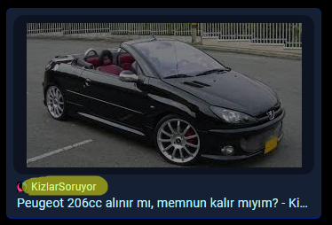

The text below is the PSEUDO CODE of the Coping Algorithm
So far I have no fucking knowledge on programming, so you have to make a WORKING program on this bro.

- TALK BULLSHIT
- Talk Some Shit
- It doesn't matter what the actual fuck program is saying; it just needs to talk nonsense shit. And when proven wrong, it should stay silent for a while. First, YOU (yeah not me bro) need to create an algorithm for this specific situation.
- SAY UNRELATED SHIT
- Cope Move: I
- After remaining silent, the program should proceed to talk about various unrelated shit. If anyone asks the program, "what the hell you are saying?", it should simply start typing random words and vanish with its GIVEN transportation vehicle (ps: PEUGEOT 206, IF POSSIBLE).
- FINAL MOVE
- Cope Move: II (Final)
- The AI or Cyborg, (whatever you're planning fucking to build) should make its final move right now. It should COPE immediately with this final move. It should simply say one line: "My car is burning oil, bro." That's it! This is the most crucial part! The programmed entity (AI, Cyborg, T-800) should say, "My Car is Burning Oil, Bro" and then VANISH.
Thanks to Ebubekir Garage for sponsoring this project
Hacked by Anzu_Jaamu06